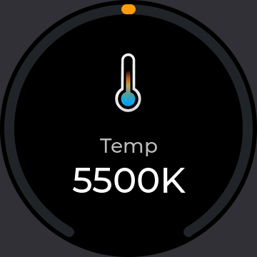
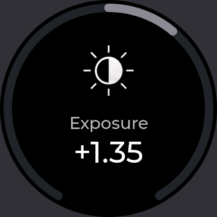
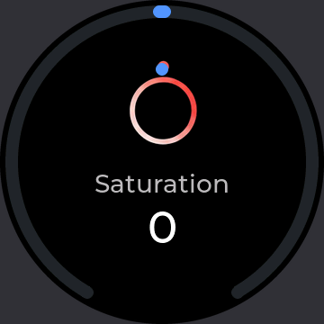
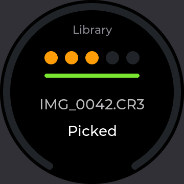
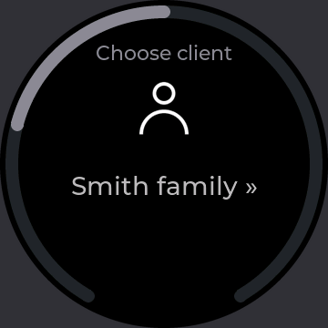
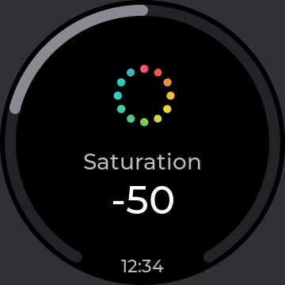
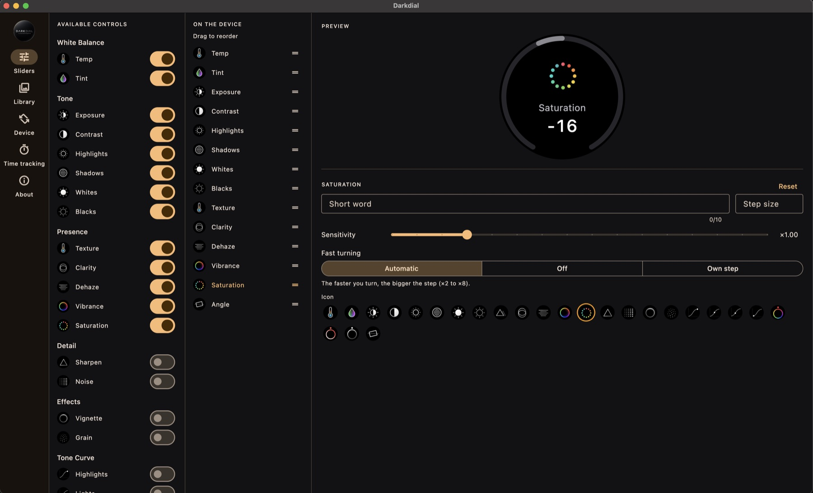
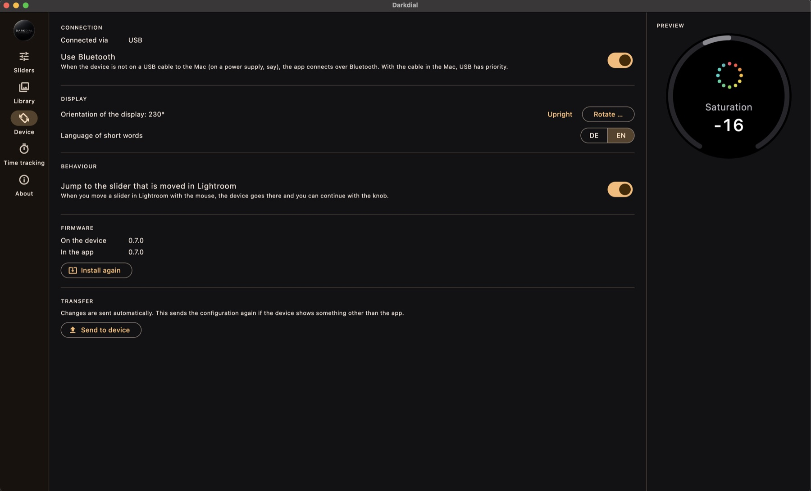

Darkdial turns a small round touch display with a knob into a dedicated controller: pick a slider, turn, and watch the value ring follow. Cull in the Library with a tap. Track the time you spend on every job.
Free and open source · signed and notarised by Apple · macOS 13 or newer
There is nothing to solder and nothing to compile. The app brings the firmware and puts it on the device for you, and it installs the Lightroom plug-in by itself.
An Elecrow CrowPanel 1.46″ Rotary Display – a round 360×360 touch display with a knob, straight from the box.
Download the DMG, drag Darkdial to Applications and start it. It sets up the Lightroom plug-in in one click.
Plug the device in, open Device and click Update. About 30 seconds later it shows your sliders.
Everything happens on a single round screen: turn, tap, press. The display always shows what Lightroom shows.
Turn through your sliders, tap to pick one, turn to change it. Slow turns make fine steps, a quick spin covers ground – set per slider.
The knob goes through your photos. A tap flags, a double tap gives stars or a colour – you choose, and it can move on to the next photo.
Hold the knob, choose a client and a job, and the clock runs. The app keeps hours per job, entries, an overview and a CSV export.
On the Mac’s cable or on a power supply across the desk – the app finds the device either way. With the cable in, USB has priority.
Move a slider with the mouse and the device jumps to it. Presets, photo changes, a reset: the ring and the number update right away.
Firmware, app and plug-in are on GitHub under the GPL. 46 sliders, German and English short words, your icons and step sizes.
The ring shows the value – from the top for sliders with a centre, from the start for the others. These are the screens as the firmware draws them.






The app holds the logic and keeps the books. Lightroom’s plug-in only reads and sets values; the device shows what it is told.
Switch on the sliders you use, drag them into order and give each one a short word, an icon, a step size and what a fast turn should do.


Connection, orientation of the display, language and firmware – all in the Device section.
| Hardware | Elecrow CrowPanel 1.46″ HMI ESP32 Rotary Display (ESP32-S3, round 360×360 IPS touch display, knob with push). A USB-C cable; for Bluetooth a power supply or power bank, as the board has no battery. |
| Computer | A Mac with macOS 13 or newer. Windows is planned. |
| Software | Adobe Lightroom Classic. The Darkdial plug-in is installed by the app and works next to MIDI2LR. |